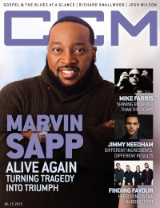

CMnexus
:
Contemporary Christian culture, music, and media.
Magazines
Profiles
Dove Awards
cmnexus.org
CM
nexus
→
Profiles
→
C
→
Matt Conner
Matt Conner
Writing Credits: 16 of 20
< -- Previous
Next -- >
11
12
13
14
15
16
17
18
19
20
Writing credits listing

15 Jul 2015 in
CCM Digital
"Counting On God"
Marvin Sapp
"Input / Output"
Jimmy Needham
"Worth The Wait"
Finding Favour
SHINEBRIGHT
-
Only You EP
Saint Esprit
-
Saint Esprit
1 Aug 2015 in
CCM Digital
Zeland
-
Zealand Worship: The EP
Flame
-
Forward
David Dunn
-
Crystal Clear
15 Aug 2015 in
CCM Digital
"No More Shame"
Jason Alvarez
P.O.D.
-
The Awakening
Rend Collective
-
As Family We Go
John Mark McMillan
,
Sarah McMillan
-
You Are the Avalanche EP
Sep 2015 in
Relevant
#77
"Are They the Next Great Rock and Roll Band?"
Foals
1 Sep 2015 in
CCM Digital
Aaron Shust
-
Doxology
Tasha Cobbs
-
One Place Live
Soulfire Revolution
-
Afterglow
15 Sep 2015 in
CCM Digital
Capital Kings
-
II (Two)
The City Harmonic
-
We Are
All Things New
-
The Good News
1 Oct 2015 in
CCM Digital
Building 429
-
Unashamed
Andrew Peterson
-
The Burning Edge of Dawn
7eventh Time Down
-
God Is On The Move
Pillar
-
One Love Revolution
15 Oct 2015 in
CCM Digital
Jon Foreman
-
The Wonderlands: Dawn
Amanda Lindsey Cook
-
Brave New World
Gateway Worship
-
Walls
Nov 2015 in
Relevant
#78
"He's Got A Breakout Hit, Millions of Fans and A Brand New Album. So Why Isn't He Comfortable?"
Andy Mineo
1 Nov 2015 in
CCM Digital
Keith Getty
-
Joy: An Irish Christmas Live
Paul Baloche
-
Christmas Worship II
15 Nov 2015 in
CCM Digital
Natalie Grant
-
Be One
Chris Tomlin
-
Adore: Christmas Songs of Worship
Rend Collective
-
Campfire Christmas (Vol. 1)
Kim Walker-Smith
-
When Christmas Comes
1 Dec 2015 in
CCM Digital
"What The People Are Singing"
Rend Collective
Michael English
-
Worship
John Tibbs
-
Dead Man Walking EP
various artists -
Top 25 Gospel Praise Songs
David Britton
-
Christmas
15 Dec 2015 in
CCM Digital
Kirk Franklin
-
Losing My Religion
Kutless
-
Surrender
Casting Crowns
-
A Live Worship Experience
Phillip Larue
-
You
Jan 2016 in
Relevant
#79
Mute Math
1 Jan 2016 in
CCM Digital
- The Wonderlands EP series
15 Jan 2016 in
CCM Digital
"Earthquakes and Afterglows"
Andrew Peterson
1 Feb 2016 in
CCM Digital
Passion Band
-
Salvation's Tide Is Rising
Meredith Andrews
-
Deeper
15 Feb 2016 in
CCM Digital
"Off The Deep End"
Meredith Andrews
"Within Reach"
John Tibbs
The Newsboys
-
Love Riot
Writing Credits: 16 of 20
< -- Previous
Next -- >
11
12
13
14
15
16
17
18
19
20
CMnexus
(noun)
The magazine index
of modern music
and Christianity
© 2011 CMnexus. Last updated April 2021.
Contact:
Rants and other correspondence to:
editor -AT- cmnexus
-DØT- org
About